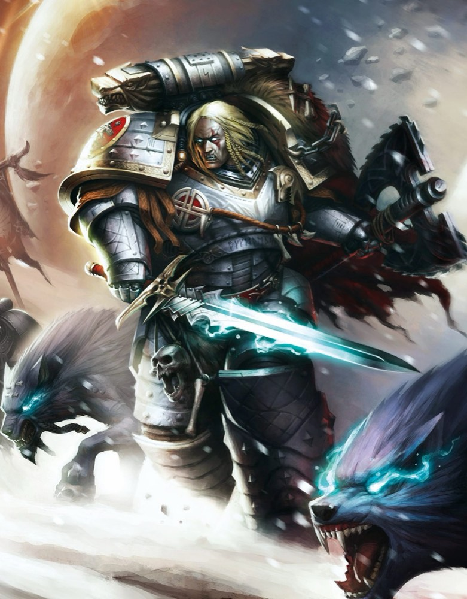

Leman Russ
| Leman Russ | |
|---|---|
| Primarch of the VI Legion | |
 The Wolf King with the wolves Freki and Geri, from a Space Wolves votive painting Artwork © Games Workshop | |
| Primarch of the Space Wolves | |
| Tenure | 819.M30 – 211.M31 (vanished from Fenris) |
| Successor | Logan Grimnar, Chapter Master and Great Wolf in later ages |
| Also known as | The Wolf King; the Great Wolf; the Lord of Winter and Ruin |
| Allegiance | Imperium of Mankind (loyalist) |
| Legion | |
| Homeworld | Fenris, Segmentum Obscurus |
| Created | c. 792.M30, Terra |
| Discovered | 819.M30, by the Emperor of Mankind |
| Vanished | 211.M31, from Fenris |
| Status | Missing; promised to return at the Wolftime |
| Relatives |
|
| Wargear | Armour of Elavagar; Mjalnar, the Sword of Balenight; the Axe of Helwinter; Scornspitter |
| Known for | The Burning of Prospero; the Wolf Cull of Yarant; the Great Hunts; his vow to return at the Wolftime |
Leman Russ, called the Wolf King and the Great Wolf, was the primarch of the VI Legion, the Space Wolves. He was the sixth of the twenty primarchs to be created and the second to be found by the Emperor of Mankind, who discovered him on the ice world of Fenris in 819.M30. Russ grew up among the wolves and tribes of Fenris and became king of his world before the Emperor arrived. The Legion he led was the most savage of the Legions, and held in its own right to its own traditions.[1]
During the Great Crusade Russ was the Emperor's hammer against his rebellious brothers. When the primarch Magnus the Red broke the Emperor's decree against sorcery, the Emperor sent Russ to bring him to Terra, and the mission ended in the Burning of Prospero. In the Horus Heresy, Russ was drawn into a fight with the Alpha Legion at the Alaxxes Nebula, and reached Terra with the Dark Angels and Ultramarines only after the Emperor had been entombed on the Golden Throne. The Space Wolves refused to accept the Codex Astartes as written, and were divided only once.[2][3]
Russ vanished in 211.M31, nearly two centuries after the end of the Heresy. At the annual feast of the Emperor's Ascension on Fenris, he fell into a vision, announced that he was dying, and left the Great Hall with the Varagyr, his wolf guard, leaving only the youngest of his warriors behind. His final words promised that he would come again, whatever realm held him, "at the final battle", which the Space Wolves call the Wolftime. His fate is unknown, and the Space Wolves have never ceased to look for him.[4]
Early life
[edit]The wolf child
[edit]The capsule containing the infant Russ landed in a mountain on Fenris, a world of ice and storm, in about 792.M30, at the end of the long age of Old Night. A lesser creature would have died at once. The child who crawled out of the wreck was taken in by wolves, and lived among them until a party of hunters found him. One recognised that he was a human child, not a beast, and called on the others to lower their weapons. The boy stood his ground and bared his teeth, but understood the sign of peace, and stayed his hand.[1]
Among men for the first time, Russ learned their languages, their weapons and their customs, and showed a natural gift for war. He laughed easily, sang loudly and roared when he was happy, but he came to see that he was unlike the people around him. The Fenrisians have a saga of the Wolf-King, which tells of how he turned armies back by himself, uprooted oaks and snapped them across his back, and ruled the tribes by strength, wit and justice. In time the tribes hailed him as king of all Fenris, and, say the sagas, "a truce existed between man and wolf".[1]
Three challenges
[edit]The Emperor's fleets neared Fenris in 819.M30 and heard stories of the Wolf King. He recognised the mark of a primarch and went to Fenris. He entered Russ' hall in the guise of a plain wanderer, and Russ refused him homage. The Emperor challenged him three times, in the manner of a saga, with each challenge a test of the primarch's pride and character. Russ passed, and the Emperor took him from Fenris and began his education in the arts and technology of the Imperium. Within weeks, the Emperor judged him ready to lead an army.[1][4]
The Mechanicum genetors who analysed the primarch genome found an addition of canine DNA in the template, which some link to the wolf-like affinity and to the later mutations of the Space Wolves.[5]

The Great Crusade
[edit]The VI Legion
[edit]Russ took command of the VI Legion, the Space Wolves, and led them across the galaxy. His conquests took the Legion far from the Segmentum Solar, and he was known for taking worlds quickly and for a hard-bitten approach to war that his brothers found uncouth. His Legion was the most fiercely independent. It was organised in Great Companies, each led by a Wolf Lord, and its warriors were chosen for ability and willingness to fight; it did not value discipline for its own sake. He commanded it, according to the Space Wolves' sagas, "like a wolf-pack alpha", by earning the respect of his warriors rather than demanding obedience.[1]
The Space Wolves fought at his side, and developed a distinct culture, with sagas, rune priests and a mistrust of the Imperium's officials. Their greatest rivals among the Legions were the World Eaters, and the Space Wolves' friendship with the Blood Angels and White Scars was strong. In this period Russ' brother primarch Vulkan reworked a Legion bolter into the oversized pistol Scornspitter, which he presented to Russ as a mark of honour after their Legions fought a hard campaign together.[1]
The Night of the Wolf
[edit]After the Ghenna Scouring of the early 900s.M30[a], in which the World Eaters massacred a world's population in a single night, the Emperor publicly censured the Legion and ordered it to stop using the neural implants known as the Butcher's Nails. Imperial records say that two primarchs went to speak to Angron: Russ was one. The parley broke down, and the World Eaters and Space Wolves, led by their primarchs, fought, though no one ever saw who fired the first shot. Each Legion claimed that the other fired first. The Night of the Wolf was remembered in both Legions as a dishonour, and left a long bitterness between Russ and Angron.[1][5]

The Horus Heresy
[edit]The Burning of Prospero
[edit]The Thousand Sons, under the primarch Magnus the Red, were devoted to the study of the Warp, and continued their sorcery after the Emperor's decree at the Council of Nikaea in 001.M31. In 004.M31 Magnus sent a psychic warning to the Emperor, telling him that Horus had been corrupted, but the message broke the wards of the Imperial Palace, and the Emperor, seeing only the breach of his decree, sent Russ to bring Magnus to Terra. The Wolf King went to Prospero with the Space Wolves.[2]
Russ' fleet attacked the Thousand Sons' homeworld and broke the city of Tizca. He met Magnus in a last battle. The sorcerer-primarch made himself stronger by sorcery in order to survive. Russ, enraged by what he saw as a dishonourable trick, lifted him up and broke his back over his knee. Prospero was razed in the Burning, and the shattered Thousand Sons, having lost their world, threw in their lot with Horus. The Space Wolves' account holds that Russ followed the Emperor's order, and that he regretted the result.[2][b]

The Alaxxes Nebula
[edit]After Prospero, Russ ordered his battered Legion to muster in the Alaxxes Nebula, where it was attacked in 007.M31. Horus sent the Alpha Legion to destroy it. Outnumbered and cut off, Russ was demoralised and shut himself in his quarters, leaving his First Captain Gunnar Gunnhilt to command. He took counsel in the silence, and returned to the bridge of his flagship Hrafnkel as Alpha Legion Terminators teleported aboard, one of whom was Alpharius. The Wolf King fought him, and the arrival of reinforcements saved the Space Wolves. Afterward he spoke with a Dark Angels fleet commander, who told him how long ago the fleet had been sent from Caliban.[2]
The Siege of Terra
[edit]Russ and the Space Wolves were far from Terra when the siege began in 014.M31. Two years earlier, in 012.M31, Russ had struck at Horus's flagship and been driven off, and the Legion had made a costly last stand at Yarant. Horus, who knew that the Space Wolves and the Ultramarines were approaching, dropped the shields of his flagship and invited the Emperor aboard, the Imperial accounts say. The two Legions arrived just after the battle was concluded. In the Crusade of Vengeance, which the Lion led, Russ joined with Space Wolves and Raven Guard in Mark VI power armour, and arrived too late to prevent the fall of the Emperor. He raged against the events that had kept him from his father.[2][3]
After the Heresy
[edit]The Codex Astartes
[edit]With the Emperor on the Golden Throne, Roboute Guilliman wrote the Codex Astartes, which split the Legions into Chapters. Russ cared little for formal tactics. He had no intention of dividing his Legion, which he thought of as one pack, and, with Dorn and Vulkan, at first refused. The Space Wolves were divided only once, and the new Chapter, the Wolf Brothers, did not last.[3][4]
The Last Feast
[edit]The most recent Imperial account of Russ' end, from the Space Wolves' own supplement to the Codicium Imperialis, called the Last Feast of Leman Russ, fixes the year as 211.M31. At the annual Feast of the Emperor's Ascension, which marks the day on which the Emperor "ascended" to the Throne, Russ rose to speak and then froze, as if seeing a vision. He fell to his knees and called for his Varagyr and closest retainers. He told them that his life's breath was nearly spent, and promised that when the Chapter was dying and its foes gathered, he would listen for their call in whatever realm held him and would come "no matter what the laws of life and death forbid". Then he left the hall with his bodyguard, and only the youngest, Bjorn the Fell-Handed, remained behind.[4]
Earlier accounts give other reasons. One holds that Russ sought the Tree of Life, an uncorrupted source of Warp energy whose fruit could heal the Emperor. Another says that he led the Thirteenth Great Company into the Eye of Terror to hunt the Traitors, in particular the Thousand Sons. Another that he disappeared while searching for his old rival and friend, the Lion. The Space Wolves' sagas record the vision and the promise, but nothing of where he went, and the Chapter has never accepted that its lord is dead.[4][5]
The Great Hunts
[edit]For seven years the Space Wolves laid his place at the feast and filled his horn. When he did not return, Bjorn was made Great Wolf, in about 218.M31, and led the first Great Hunt, a search across the galaxy, which ended in the Eye of Terror, where Bjorn was mortally wounded and entombed in the sarcophagus of a Dreadnought. The second Great Hunt brought back Russ' armour from a temple of Horus on the world of Rudra, and others unmasked a conspiracy, the Corellian Conspiracy, and destroyed genestealer worlds in the Gehenna System. Each Hunt begins when Russ speaks in a vision to a Rune Priest. None has found him.[4]
Many Space Wolves believe that the Wolftime is near. In 999.M41 the Thirteenth Great Company, long lost, is reported to have emerged from the Eye of Terror during the Black Crusade, and the Thousand Sons, now led by the Daemon Primarch Magnus, assailed Fenris itself, a siege that the Space Wolves have counted as a sign. The Space Wolves hold that the Wolf King will return.[4][6]
Character and abilities
[edit]Russ believed, unlike Dorn or Guilliman, that true strength lay not in order and planning but in adaptability, the passion of each warrior and an iron will to survive. He was boisterous and generous, and loved a feast, a song and a boast, but he had a violent temper, and held grudges. His loyalty to the Emperor was absolute, and he did not question an order, even when he did not like it.[1][2]
As a warrior, Russ was among the greatest of the primarchs. His Legion was famed for its charge and its endurance, and he often took the lead. He was at his best in close combat, and he beat Magnus the Red by sheer strength. His faults were the product of pride and anger, and he was unable to command unless he could fight beside his warriors. The Space Wolves hold that those faults and his virtues were the same quality.[1]
Forces of the Wolf King
[edit]Freki and Geri
[edit]The Hearth Wolves of the king, Freki the Swift and Geri the Cunning, were two huge wolves, of great size and intelligence, who had been the companions of Russ from his earliest days. They guarded his hearth, and followed him into battle. They are a symbol of the Space Wolves, and of the connection between the Chapter and death.[1]

The Varagyr
[edit]The Varagyr were the Wolf King's personal guard, picked from his own Great Company for their sagas and their accomplishments. They wore the pelts of great beasts, held back from battle until the lord of the Space Wolves commanded, and when they were released they charged like cannon shells. They left Fenris with Russ in 211.M31, and have not been seen since.[1][4]
Wargear
[edit]- Armour of Elavagar: a unique suit of artificer armour, the origins of which are lost in the Legion's early wars, and are told in the Chapter's sagas in obscure metaphor.[1]
- Mjalnar, the Sword of Balenight: a sword of ancient mystery, known to the Remembrancers as Balenight, a legend of the Age of Strife, and to the Space Wolves as Mjalnar.[1]
- Axe of Helwinter: a frost axe whose edge was made from the teeth of a kraken of Fenris that Russ had killed.[1]
- Scornspitter: a bolter reworked by Vulkan into a primarch-sized pistol.[1]
Legacy
[edit]Leman Russ is the greatest figure in the sagas of the Space Wolves, and is as much myth as record. The Chapter celebrates his deeds on Allwinter's Eve, when the Rune Priests chant his sagas. The Wolf King's name is a byword on Fenris for generosity and wrath, and the people of Fenris and the Space Wolves share a custom of setting his place at the feast. The Space Wolves hold that, when the Wolftime comes, the Wolf King will come for them, and that nothing in life or death will prevent him.[4]
The Space Wolves' conduct, and their loyalty to a primarch who may not return, has long been a matter of interest to the Inquisition. Since the return of Roboute Guilliman and Lion El'Jonson, the Chapter has watched for the Wolftime with greater attention.[6]
Timeline
[edit]| Date | Event |
|---|---|
| c. 792.M30 | Created on Terra; his capsule falls on Fenris |
| 819.M30 | Found by the Emperor after three challenges; takes command of the VI Legion, the Space Wolves |
| Early 900s.M30 | The Night of the Wolf: the Space Wolves fight the World Eaters after the Ghenna Scouring[c] |
| 000.M31 | Present at the Triumph of Ullanor |
| 001.M31 | Speaks against the Thousand Sons at the Council of Nikaea |
| 004.M31 | Leads the Burning of Prospero and breaks Magnus the Red |
| 007.M31 | Ambushed by the Alpha Legion in the Alaxxes Nebula; duels Alpharius |
| 012.M31 | Strikes at Horus and is driven off; the Space Wolves' stand at Yarant |
| 014.M31 | Arrives at Terra after the Siege of Terra has ended |
| 014–c. 021.M31 | Fights in the Great Scouring; resists the division of his Legion under the Codex Astartes |
| 021.M31 | The Second Founding; the Space Wolves divided only once |
| 211.M31 | Leaves Fenris after the Last Feast and vanishes |
| c. 218.M31 | Bjorn made Great Wolf; the first Great Hunt |
| 999.M41 | The Thirteenth Great Company returns from the Eye of Terror; the Space Wolves await the Wolftime |
See also
[edit]Notes
[edit]- ^ Date estimated from the sequence of events; the massacre followed the discovery of Angron in 899.M30.
- ^ The Thousand Sons' account of the Burning, preserved by the Inquisition, claims that the Space Wolves were in a frenzy and killed civilians. The Space Wolves deny it. Imperial opinion is divided.
- ^ Date estimated from the sequence of events.
References
[edit]- ^ a b c d e f g h i j k l m n o Dembski-Bowden, Aaron. Betrayer (novel). Black Library, pp. 240-242. Codex Supplement: Space Wolves (10th Edition), "The Last Feast of Leman Russ". Games Workshop.
- ^ a b c d e f Abnett, Dan. Know No Fear (novel). Black Library, Ch. 2. Wraith, Chris. Battle of The Fang (novel). Black Library.
- ^ a b c Dembski-Bowden, Aaron. The First Heretic (novel). Black Library, Ch.21. King, William. The Space Wolf Omnibus (Omnibus Novel). Black Library, pp. 193-194.
- ^ a b c d e f g h i Wraight, Chris. Wolf King (novella). Black Library. McNeill, Graham. False Gods (novel). Black Library, Ch. 21.
- ^ a b c Haley, Guy. Wolfsbane (novel). Black Library, Chs. 1, 6-9, 13, 15-27. Codex Adeptus Astartes - Space Wolves (8th Edition), pg. 6. Games Workshop.
- ^ a b McNeill, Graham. A Thousand Sons (novel). Black Library. cover), Dan Abnett (including. Prospero Burns (novel). Black Library.
Further reading
[edit]- Codicium Imperialis, vol. VI. Space Wolves, Fenris. The Great Wolf's own record of Russ' vanishing.
- Liber Primarchus (M32, revised M41). Administratum Archive, Terra.
- Guilliman, Roboute (c. 019.M31). Codex Astartes. Macragge. The dispute over the division of the Legions.